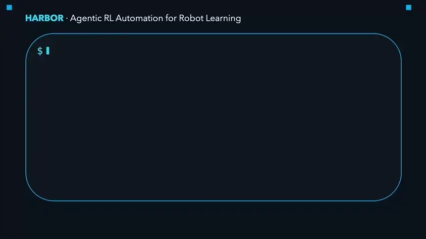
arXiv 2026
HARBOR: A Harness Framework for Agentic Robot Reinforcement Learning
Automates the end-to-end robot RL workflow, from package installation to policy tuning.
I am a PhD student at PEARL Lab, advised by Prof. Georgia Chalvatzaki since October 2024, and currently a Student Researcher at Google DeepMind in London. Previously, I was a visiting researcher at MIT CSAIL with Prof. Pulkit Agrawal and interned at DexMate and IDEA Research.
My research focuses on robot learning and reinforcement learning, with particular interests in scalable simulation, dexterous and humanoid manipulation, and agentic systems for automating robot learning.
I received my bachelor’s degree in computer science from Columbia University in May 2022. During my undergraduate studies, I was fortunate to work with Prof. Xiaodong Wang, Prof. Anwar Walid, and Prof. Sharon (Xuan) Di.
* equal contribution

Automates the end-to-end robot RL workflow, from package installation to policy tuning.
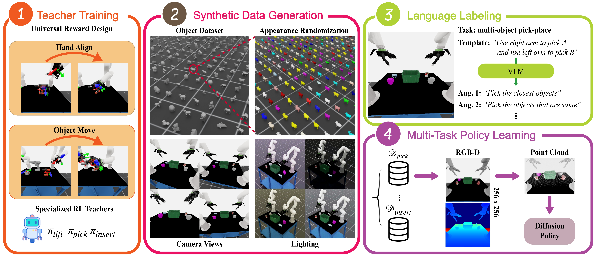
Generates multi-task demonstrations for language-conditioned bimanual manipulation via RL.
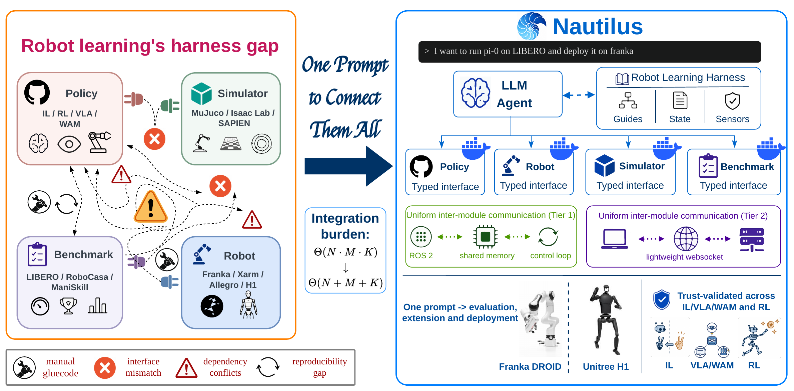
Turns a single prompt into reproduction, evaluation, fine-tuning, and deployment workflows.
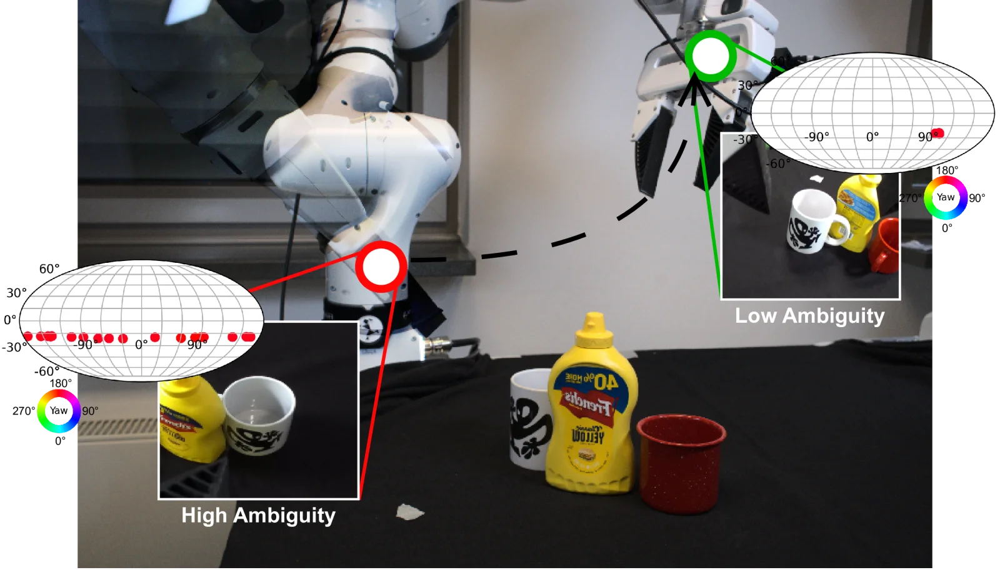
Estimates full 6D pose distributions via flow matching on SE(3) for uncertainty-aware manipulation.
Exploits morphological symmetry to learn ambidextrous bimanual manipulation.
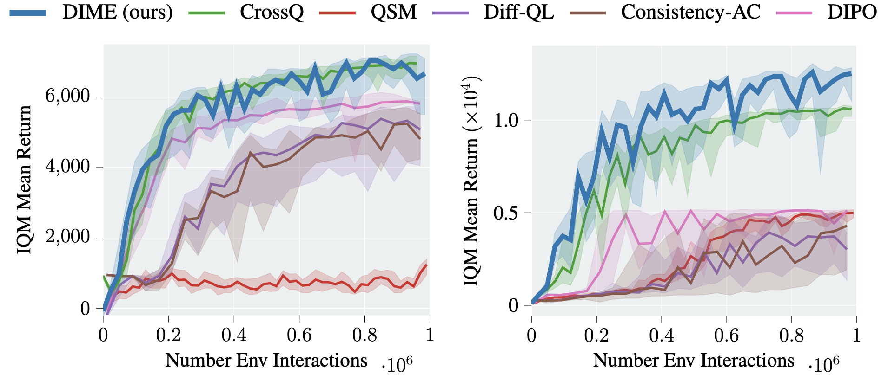
Trains diffusion policies with maximum-entropy RL, reaching state-of-the-art returns.
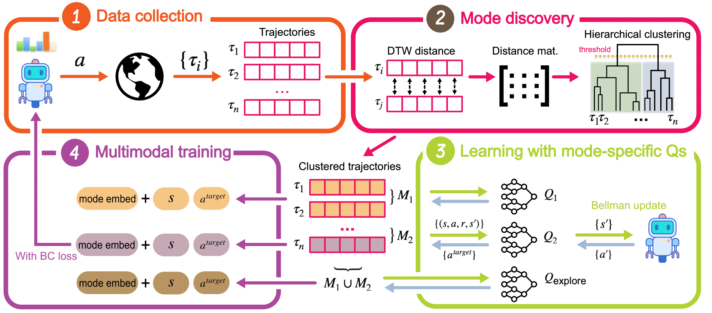
Learns multimodal diffusion policies from scratch, without demonstrations.

Robustifies real-world policies by fine-tuning them in digital twins built on the fly.
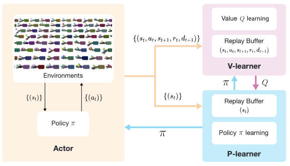
Scales off-policy RL to 10,000+ parallel environments.
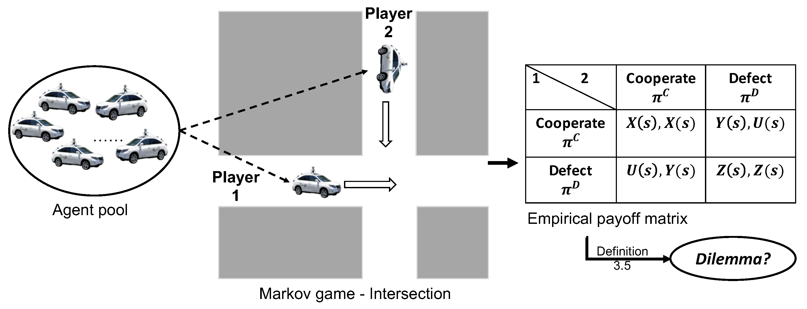
Identifies when social dilemmas arise in autonomous vehicles’ sequential decisions.
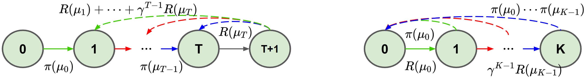
Adds a quantum K-spin Hamiltonian regularizer that steers policies toward better optima.
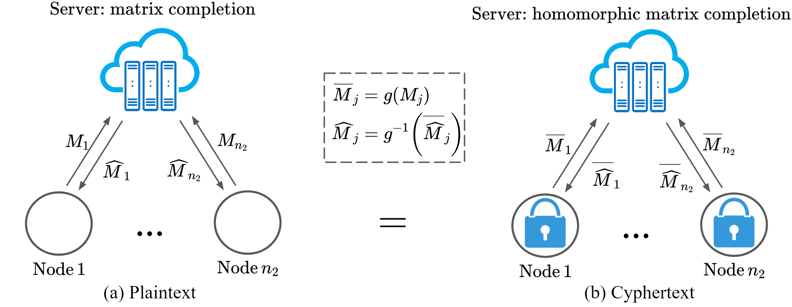
Achieves exact matrix completion under differential privacy, at the cost of more samples.
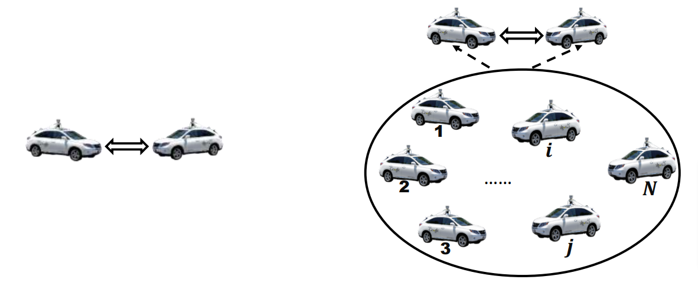
Studies how autonomous vehicles form social norms through RL in Markov games.
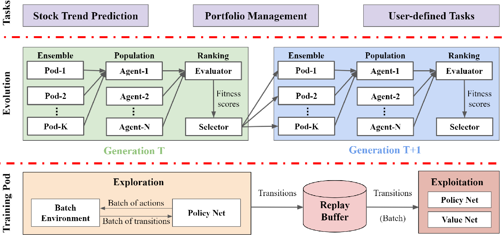
Trains a NASDAQ-100 trading agent in 10 minutes on 80 A100 GPUs.
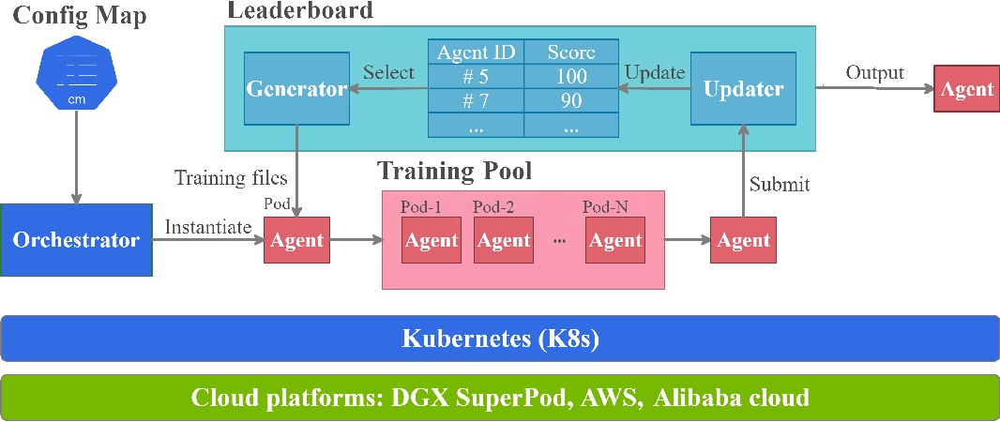
Scales cloud-native DRL training across millions of GPU cores.
Brings deep reinforcement learning to quantitative finance and automated trading.
Runs massively parallel DRL training on cloud-native infrastructure.
As a leader of this project, I have been contributing to
Starting from Mar. 2021, I started to write tutorial blogs for the community,
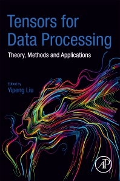
Compresses and accelerates neural networks with high-performance tensor decompositions.